Prior to leaving on my first travel adventure, there were a few key people that helped inspire me to leave my North American life behind. One such person is a good Vancouver friend of mine, Robert Scales.
Here's Robert's latest BIO:
PADI Master Scuba Diver Trainer with a passion for management, teaching, underwater photography, and digital media. I’m currently working in Bali, I am the General Manager and a Master Scuba Diver Trainer at Dive Concepts.
I’m a former digital media executive. A...
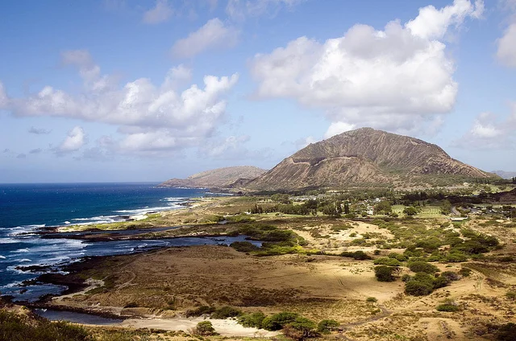
I recently returned from a one week impromptu trip to Oahu, Hawaii, and wanted to share my final thoughts.
The flight time from Vancouver was around six hours, so it was still a relatively short jaunt. Not as short as flying to the west coast of Mexico mind you, but about the same amount of time as flying to Cancun or the Dominican Republic.
The Island
During the Lost Legends tour we drove over the entire island in the course of a day. I'd say it takes less than an hour to criss cross the island...
I don't like to fly. In fact, I would say that I pretty much hate it.
First, airports involve delays. You generally have to wait in line to check-in or check bags. Then you have to wait to go through security. Then you have to wait in the waiting area to board you plane. Then you board, and have to wait inside. Ideally your plane will leave on time, but often it doesn't, and you're stuck waiting on the plane.
Next, you're cramped into a small space, usually sitting next to one or two other peopl...
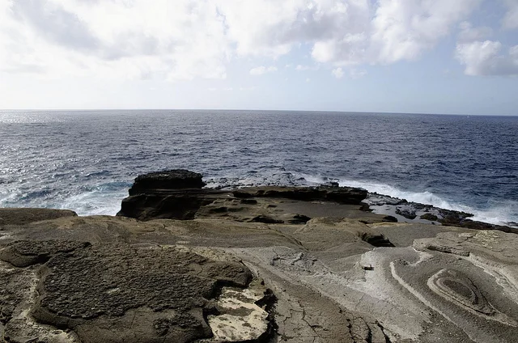
Like most people in North America over the previous six or so years, I was a pretty big fan of the TV Show, Lost. While the ending caused a lot of controversy, I watched the show pretty religiously over the last few years, and still even occasionally fire up an episode or so on my iPad.
One of the reasons I was drawn to Oahu, Hawaii, was because I was a fan of the beautiful geography that was featured in Lost. In case you weren't aware, almost 100% of the show was filmed here.
Hawaiian Escapades...
This is the first post in an ongoing series where I'll be featuring a few of the travellers I've encountered on the road or whose web sites I've frequented during my travels.
First up is Alexandra Kovacova, also known as the CrazySexyFunTraveler. I've chatted with Alex a few times on Twitter about travel, and asked her a few questions which she graciously answered for this post:
First, what's your name and where are you originally from?
My name is Alexandra Kov·Ëov· and I was born in a small...
Alaska Airlines recent announced that they were starting service from Bellingham International Airport to Honolulu, Hawaii. Last week I managed to find a cheap $400 return flight on that same route, so I decided to book it and finally get around to seeing Hawaii.
I've looked at going to Hawaii before, but the costs have always been rather high when compared to Mexico. Hawaii is an American state, so not only does it have American prices which are in line with the rest of North America, but it al...
When many people think of traveling, their thoughts often gravitate towards all inclusive trips, usually containing a beach, a buffet, and a week escape from the daily grind. In North America especially, those pre-packaged vacations are generally the only options for people to take, since their vacations are often only a week or two long in duration.
But world travel isn't just about the places you go; it's also about the physical and personal journeys that it takes to get there and the growth ...
We live in interesting times.
The United States is only a few weeks away from what potentially could be one of the largest defaults in world history. Given how the Republicans do not want to increase taxes and that the Democrats do not want to decrease spending, the only machinery that can prevent this default is currently seized up. Obama was so upset the other day during negotiations that he just up and left.
Moodys once again threatened to lower the outlook on US treasuries. Given that the US...
I have to admit, this weather has been getting me down. Other than a few days of sun on Vancouver Island last week, I haven't really seen much in the way of warmth or sunshine since returning from South America. When I looked at the forecast this morning and saw 7 days of rain in the long term forecast, I decided to do something about it.
I spent about 15 minutes bouncing around Expedia and Travelocity, and eventually honed in on a flight to Hawaii for a little over $400 out of Bellingham. Give...
While the weather in Vancouver hasn't exactly been stellar lately, I've still managed to get out for a bike ride from time to time. Given that I envisioned myself wanting to take my bike to Stanley Park from time to time or out to Chilliwack, I decided a while ago that I would need some type of bike rack.
The easiest option for my Mazda 3 was a roof rack. The Mazda 3 already has a built in header that allows a rack to easily be mounted onto it. But truth be told, the idea of having a bike floati...
Inside my suitcase upstairs is a huge manilla envelope that has the majority of receipts in it for my trip to South America. Since some of them represent expenses that I can write-off on the business side, it was important to keep them for Revenue Canada in the odd event of an audit down the road.
Unfortunately for me though, it meant that I had to collect all my receipts while traveling around the world. It's one thing when you have an apartment in Canada and everything can be sorted into file ...
When I left my apartment back in November of 2010, I put the majority of items into a 8x9x10 storage locker. I spent about a week selling off most of the big furniture (which would have been harder to store), and basically just ended up with a pile of boxes.
I didn't hesitate at the time to put all my belongings into storage. I knew I would be gone at least four months, and likely more. But it's now July, which means my belongings have been in storage for seven months. At a price of roughly $10...
I was downtown a few weeks ago and parked my car in a parking garage. Somehow over the course of the day though I accidentally misplaced my key chain, which has of course my car keys, my house keys, and several other keys.
While I've misplaced my keys for a few hours before, I've never outright lost a set in my life. Prior to going traveling I always had a spare set around, usually over at my sister's house, so it wouldn't have been a big deal. But my current set of spare keys is actually either...
Prior to setting out on my last adventure, I went down to Mountain Equipment Co-op (MEC) here in Vancouver and tried to find a backpack to take with me on my trip. I was looking for a backpack with the following qualities:
Should fit as carry-on for most airlines
Should have room for a laptop and my iPad
Should be large enough to carry basic necessities like a few changes of clothes and toiletries
With these criteria in mind, I eventually settled on purchasing the MEC Pangea 40, which is a 40 ...
One of the main reasons I came back from my last trip was to take a bit of a breather in BC for a few months, and also to enjoy a bit of time camping in the outdoors. I've managed to do both since arriving back at the end of April, and so it's time to start thinking about moving on again.
I quite liked escaping some of Vancouver's dreary rainy/cold season last year in Argentina, and I thought I would head to the southern hemisphere again this year. With that in mind, I've been thinking about New...
I'm sure most of us have some story about a friend of ours who got dinged several hundred dollars or more in roaming charges while out of the country. My friend Chris has a $6,000 bill in Australia, something that unfortunately still happens quite often due to amazingly high roaming rates in some countries. I've been fortunate in that I haven't been exposed to any high fees, and have in fact often spent less in other countries than back in Canada.
I spent some time speaking to Gillian Shaw on t...
I'm currently out on Vancouver Island, enjoying some R & R with my dad and step-mom. I was looking for a book to read yesterday, and had the idea to re-read The Hobbit, a book I haven't read in about 20 years. It's the predecessor of the Lord of the Rings trilogy, and a lot of the mythology that appears in that series was started in The Hobbit.
As many people know, Peter Jackson (the director of the three Lord of the Rings movies) is currently making a two-movie version of The Hobbit. It's n...
One thing I'm getting consistently more and more frustrated with is how supporters of the HST keep telling me, via blog posts and interviews, that the HST results in me paying less money as a consumer. The problem is it hasn't so far, nor do I think that it will for me personally.
Other than rebates for low-income families, the HST results in a tax increase on about 20% of purchases, most notably for me in restaurants and pubs. It's a substantial increase of 7%, and I notice how much more expens...
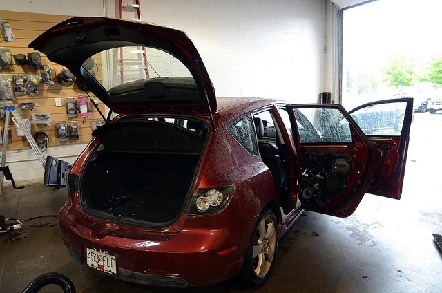
I'm down at Driven Audio down in Abbotsford right now getting some new speakers, an amplifier and a subwoofer put into my Mazda 3 sport. I've been meaning to upgrade the audio system for years, but have never gotten around to it. Considering I'm heading off on a bit of a road trip next weekend, I thought now would be a good time.
10:45am - speakers in the doors are being removed
1pm - Installing tweeters and 5x7s in the doors, along with the crossover
2:30pm - I wasn't going to replace the d...
This last weekend my friend Dave and I made a hasty escape from the city and headed towards Pemberton. I ad a pretty rough prior week, as did Dave, so we were both looking to get away for a few days and simply enjoy some time in the outdoors.
The place we ended up going to is called Owl Creek, and it's a small campground about 15 minutes past Pemberton, BC. Usually when I'm up in that neck of the woods I head on up to Birkenhead Lake, but Owl Creek is about 40 minutes closer from Vancouver, and ...
I've been alluding to it for a few weeks now, but I'm pretty close to buying my plane tickets for the fall. I was originally planning on going to New Zealand, but a few friends convinced me to add Thailand to my list as well.
New Zealand
As everyone knows, Lord of the Rings was filmed in New Zealand, and the geography shown in the movies is absolutely breathtaking. Since seeing Fellowship of the Ring in 2001, I've been dreaming of someday being able to visit the country and do some exploration....
Update: Here are the slides from the presentation - enjoy!
I'm giving a talk in a few hours down at The Network Hub, and wanted to start a post here for some of the information.
For those of you who can't make it or are stuck on the waitlist, I'll be talking about the following items:
Creative Commons Licensing
WordPress and Social Media Stats
Plugin: Copyrighted Posts (Licensing Content)
Plugin: Tweet, Like, Google +1 and Share (Sharing)
Plugin: ShareThis (Sharing)
Plugin: Sociable (Sharing)
P...
I pulled about 6 GB worth of photos from my phone the other day, most of which were taken from my four month adventure in South America, New York City and Europe. The photos aren't as high quality as the ones from my SLR or my EPL-2, but they still represent a portion of my trip that brings back fond memories.
Here's the slideshow for your viewing pleasure. I recommended clicking the fullscreen button in the bottom right and then clicking "Show Info" in the top right to view the captions.
{EAV_B...
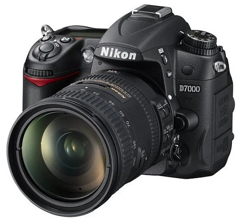
Funny. The last post I did in the photography section of this site was titled "SLR Owner, No More." That was written in New York City back in March right after I sold my Canon SLR and purchased my micro four-thirds system.
That said, it's always been my intention of buying some new higher-end camera gear when I had a chance. The Canon 40D I had was quite old when I sold it, and while it was still a decent camera, many advances have been made since I purchased it almost two years ago.
I've also ...
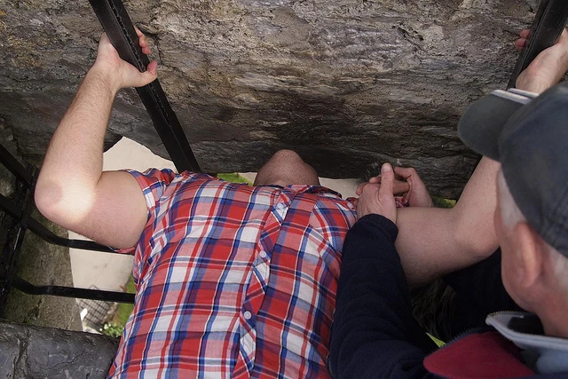
Voted the #1 most unsanitary tourist attraction in the world several times, I managed to visit the Blarney Stone back in March and give it a little smooch.
Apparently I now have "The Gift Of Gab". So if I talk your ear off with eloquent speech, you now know why.
It's actually kind of awkward to kiss it as you have to learn all the back and lower yourself down. But, I somehow managed to pull it off....
A friend of mine on Twitter posted a question today asking if anyone had done any world travel, and if so, what they thought of taking a laptop with them. Since I just got back from four months of world travel, I thought I would write an entry detailing my experiences with backpacking with a laptop.
I spent the majority of my time in the city of Buenos Aires in Argentina. I brought along my 13" Macbook Pro, which is valued at around $1,500 in Canada. There is actually a lot of petty theft in Bue...
It seems that no very long ago I was writing about some looting and rioting with regards to the winter olympics. By comparison to what happened here in Vancouver two nights ago, those acts were relatively minor and forgettable.
By this time everyone knows what happened after game 7. A few drunken idiots decided to cause trouble, and other idiots got on the bandwagon. The media has tried to label most of these people as individuals from out of town, but not all of them were. They have also tried...
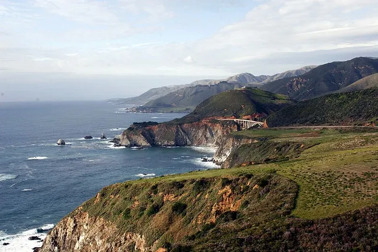
A few weeks ago I made an impromptu decision to escape some of the rain here in BC and head down to California to visit a few friends for this upcoming weekend. Back when I used to work in the Voice Over IP field, I probably made at least 2 or 3 trips a year down to the Bay Area to work with some Yahoo! people and also to attend various functions at Google.
Now the weekend is approaching, I need to decide just what it is I want to do in San Francisco. My friends live near Palo Alto (home of Appl...
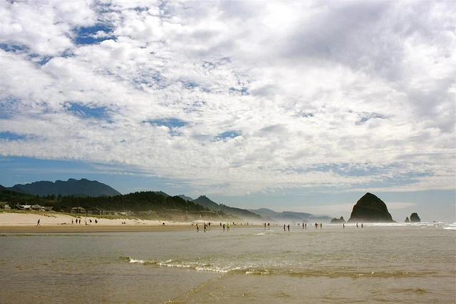
Yesterday I went up to Golden Ears park to scope out some campgrounds for the summer. I was actually surprised just how pretty it is up there, and am regretting that I only just discovered the area now. From the front door of where I live to the entrance of Golden Ears is only about a 30 minute drive, so it's quite conceivable I can be camping in about an hour after I decide to go camping.
It sounds weird, but I still get surprised when I realize that I can simply get in the car or on a plane a...
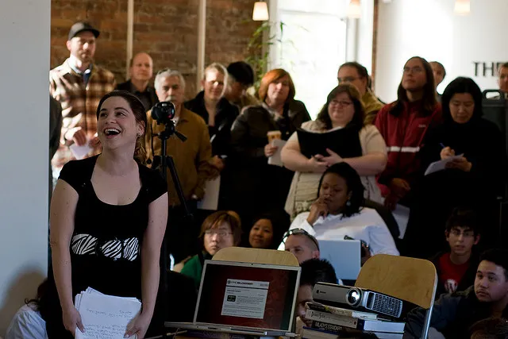
Rebecca is over in Victoria right now for Social Media Camp, and it sounds like it's a great event. WIthout a doubt, everyone is interested in social media right now, and learning how they can leverage it to build relationships and better run their business.
While it hasn't been officially announced yet, I'll be giving a talk about WordPress and social media on June the 23rd at the monthly WordPress meet-up in Vancouver. It'll be at the Network Hub, and should be a fun event. Hopefully whoever ...
As many people know, I spent the last four months bouncing between South America and Europe. It was a fun time, and I met a pile of great people over the course of my trip.
One such person is Stella Maris, who lives just outside of Sao Paulo, Brazil. I was at a random pub in Buenos Aires called "Sugar" when I ran into Stella and her cousin. I was a few sheets to the wind, so I honestly don't remember too much that night, other than meeting up with them. But thankfully I've kept in touch with St...
I've been following along with the Air France crash investigation with interest. I don't like flying: I get anxious on airplanes and would rather not be hurtling through the atmosphere. But I know that if you want to go anywhere fast, you need airplanes. So whenever I hear about a plane crash, it always unnerves me a bit.
Normally I put the crash out of my mind as simply a crappy plane used by a lesser-known airline, or the result of some route I'll probably never go on. But the crash of Air Fra...
About two months ago I was packing up my items in Buenos Aires, getting ready to fly to New York City and then to Europe. I've been out in Port Coquitlam now for almost a month and am pretty much back into the swing of my normal routine here.
I've been thinking quite a bit about the summer, and of course what my plans are after that. Everything is still up in the air, but here's how I think things will shape out.
I've been planning for quite some time to take most of July and August off. I have ...
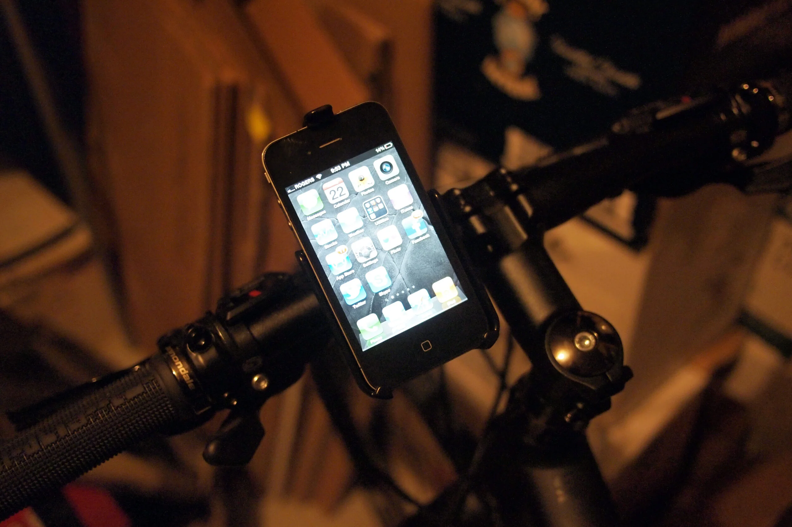
I'm up to a little over 60 kilometres worth of biking on my new bike, and so far I'm really enjoying getting outside again. The first few rides I did were pretty painful, both from a muscle perspective and also from a cardio perspective. But I'm up to about 16 kilometres a ride now, and I can see myself doing a 25 kilometre ride fairly soon as well.
I've actually been using the RunKeeper application on my iPhone to track my progress. It's a free application as well as a free service (there's a p...
For those of you following along on my great Twitter adventure know, I recently purchased a new bike and am trying to get out and get some exercise from time to time. Prior to leaving for Argentina I was actually going to the gym about four or five times a week, but didn't really get much exercise (other than massaging my liver from time to time) while I was away.
Despite what many people think, exercise really only has a moderate affect on weight loss, if any at all. In fact, almost every prope...
Many people have heard the phrase low-carb before - basically a low-carb food implies food with a minimal amount of carbohydrates in it. I would say that any particular low-carb meal should probably have less than 10 grams of digestible carbs in it if it is be classified as a low-carb meal. The motivation for doing so is to limit the amount of insulin that gets produced after the meal. Since insulin directly influences the accumulation of fat, a low-carb diet/meal minimizes the amount of fat tha...
This upcoming weekend is the 2011 incarnation of Northern Voice. I went to my first Northern Voice back in 2007 and met so many great and inspirational people. In actuality, that event was the catalyst that started me playing with WordPress and meeting some of the people that I now call my close friends.
Since I lived out in Chilliwack during last year's Northern Voice I didn't get a chance to catch it all, but I swung by for an hour or so and said hello to some friends. This year I should I li...
As everyone in Vancouver now knows, Derek Miller passed away Tuesday evening and his final blog post, written before his death, was published online first thing in the morning. When I first read the post, I did so thinking it was an actual update from a living Derek, and had to read it twice before it sunk in on me that he was actually gone.
I never knew Derek Miller before cancer. The first time I heard his name was at Northern Voice in 2007 I believe, and a few people organized a video to be ...
Well, the results are in and Harper has somehow secured a majority government. I'm actually surprised that they obtained a majority, mainly due to vote of no-confidence in parliament, but this is how it all played out. In all honesty, I can definitely handle the conservatives winning, but I find it odd that Harper is still allowed to lead the party.
At the very least you would think the conservative party would remove Harper as the figurehead based on the previous allegations against him and th...
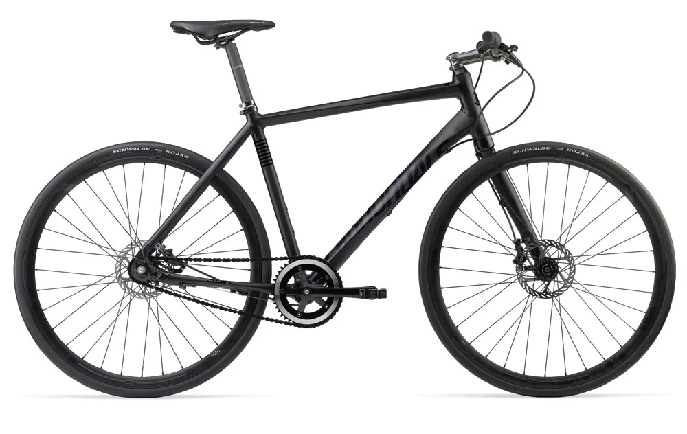
Between the ages of 17 and about 21 or so I was actually pretty big into biking. I used to have a Specialized mountain bike, and would hit the trails on the weekends or ride around Chilliwack with my friends. Unfortunately that bike got stolen one day when I accidentally left the garage door open overnight, and I didn't have money to replace it at the time.
About five years ago I decided to pick up a bike in Vancouver, and ended up getting a cheap $150 hybrid just to try and get some exercise. I...
As everyone now knows, Osama Bin Laden was killed tonight in what was apparently a US led mission in Pakistan. I watched the entire media surrounding the event unfold, starting with Twitter, moving to some news agencies such as the New York Times, and finally culminating in President Obama's speech regarding the death of Osama Bin Laden.
In truth, I found it hard to watch. While I am happy that all the families who were affected by September 11th finally have closure, I find it hard to celebrate...
I remember taking a summer off from UBC one year and heading back to Chilliwack. At the time gas was sitting at around 39 cents per litre. It's hard to imagine that it's only been around ten years since then and gas is now hovering at around 140 cents a litre in the Vancouver area. To put that into context, the $60 I spend filling up my car would have cost around $16 back then.
In fact, now that I'm back in the Vancouver area, it's not lost on me just how expensive it is to own and operate a ca...
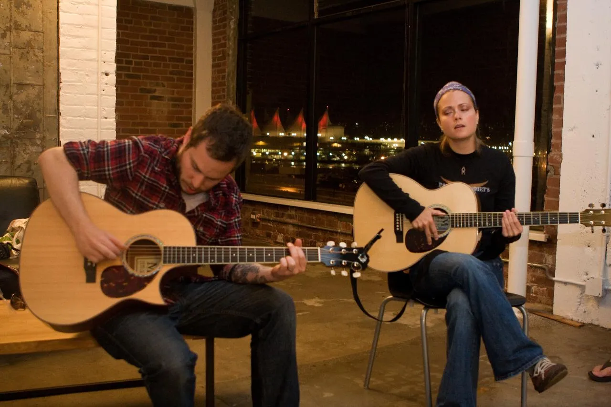
Back when I was 18, my mom asked me what I wanted as a present for successfully completing high school with honours. My friend Matt at the time had just started playing guitar, so I decided at that moment I too wanted to be a guitar player. A few weeks later we found ourselves down in Tom Lee music in Vancouver, and my mom purchased my first guitar for me, a Fender Stratocaster.
Since that time I've probably gone through three or four acoustic guitars, each time upping the ante in terms of cost ...
There's a new kid on the block in terms of Vancouver WordPress conferences, and that kid's name is WordCamp:Developers. Unlike previous incarnations of WordCamp in the Vancouver area, WordCamp:Developers will have less content about the beginner aspects of WordPress (like the difference between .com and .org, which comes up at many conferences) and more content about advanced aspects of WordPress, such as development.
As many people know, I've helped organize three WordCamp conferences in the Va...
I've been itching lately to try cooking some Indian cuisine, and have devoured a few cookbooks on the subject. The cookbook that appeals to me the most includes recipes that entail slow cooking most of the popular Indian dishes, so that's what I've decided to start with.
The name of the book (if anyone is interested) is The Indian Slow Cooker: 50 Healthy, Easy, Authentic Recipes.
Why Indian? That's a good question. Probably the best answer is that I really have no idea how to make any of the dis...
I moved into my summer home yesterday with John and have slowly started getting settled. Most of my bedding is stuck in the back of my storage locker, but considering that I only have a duvet and some sheets stored I decided to simply buy a new bed set. So yesterday I went out and bought a bed in a bag from the new Walmart out in Chilliwack.
Since then I've dropped about $250 on both groceries and a few new kitchen toys, including a slow cooker. I had a slow cooker a long time ago but never used...
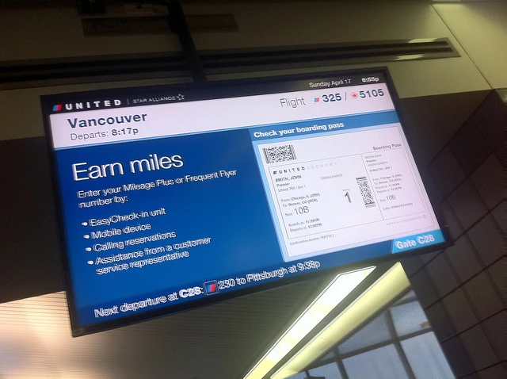
As many people on Twitter know, after four months of traveling I am finally back at home in BC. I was originally going to fly back home on Thursday, but the combination of a friend of mine having a death in the family back home and the fact that I found a really cheap flight leaving Dublin on Sunday made me decide to head back a few days early.
Sunday was a long day: I had an eight hour flight from Dublin to Chicago, a five hour layover, and then another four and a half hour flight to Vancouver....
I'm currently sitting in the Edinburgh airport in Scotland sipping on a rather expensive $6 diet coke while waiting for my flight to Dublin. I haven't done a post on the economy in a while, so I figured it was about time.
Lots is going on down south, none of it is good. Last weekend the US government came close to a shutdown due to the fact that they hit their congressionally approved debt ceiling. While it's been raised previously, there's growing concern that the US debt is at the point of no...
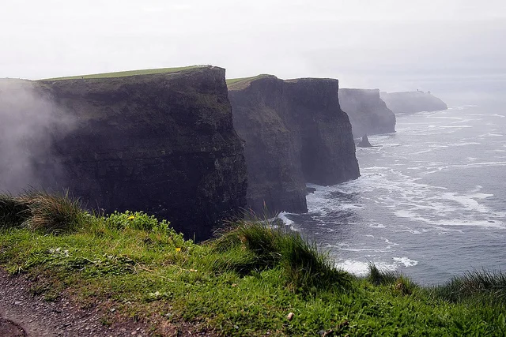
I left South America a few weeks ago, and have since been to New York City and a great deal of Ireland.
Ireland was quite the whirlwind adventure. I spent the first night in Limerick at my friend Andy's place, and then the next day we did a road trip up to Galway. The day after we headed down to Cork, and made a quick pitstop to kiss the original Blarney Stone. The next two nights we stayed at little 200 year old cottage in Mitchellstown. All in all a great adventure. I flew to Edinburgh, Scotla...
I've been going pretty much non-stop since last Wednesday. It's hard for me to believe that less than a week ago I was sitting in the airport in Buenos Aires getting ready to leave. Since then I've flown for 15 hours, been molested in Houston airport, and spent five days bouncing around New York City with my friend.
Leaving Buenos Aires
Before leaving Canada I managed to pick up a prescription of Ativan to help with airplane anxiety. I actually have a mild-phobia of hurtling through the atmosphe...
As of yesterday, I am no longer the owner of a SLR camera. I purchased my first SLR back in 2004, so I've been a SLR user for almost 7 years. And while I love the quality of photos you can take with a SLR camera, dragging tons of equipment and lenses around gets a bit tiring. That's even more true when you start picking up some of the nicer, heavier lenses, many of which I owned previously.
I sold all my L-series glass about 6 months ago, partially because they weren't being used and also becaus...
Six months ago I was sitting back in my apartment in Chilliwack trying to figure out where the first destination on my big adventure would take me. I immediately thought of the Caribbean, since it was an area I had been to many times and I was familiar with. Since the goal of my trip was to also work while exploring the world, that meant wherever I ended up would have to have decent access to the internet. That took Cuba off the list, as well as most small towns. I was actually homing in on the ...
I'm in the process of checking myself out of my apartment in Buenos Aires, and will be shortly heading to New York City for a few days of feasting and sight-seeing. One of the first items on the agenda though is to head to B&H camera to pick up my first micro four-thirds system camera.
I've decided on the Olympus E-PL2 camera, which is one of the newest, highly reviewed micro four-thirds bodies available. John Biehler just did a great write-up on the same camera, so definitely check it out....
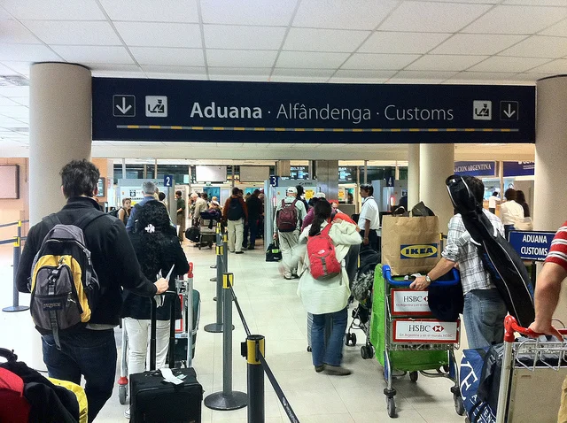
I'll probably do a summary post on Buenos Aires the night when I leave, but this is my last weekly update from Buenos Aires.
My little widget says that I'm leaving my apartment in four days, at which point I'll be migrating to a hotel for my final night. I've been trying to get my landlord to commit to a time to do the final walkthrough so I can get my damage deposit, but he hasn't responded to me. I'm not worried, since I do hold the keys and he can't really rent it until he gets them back from...
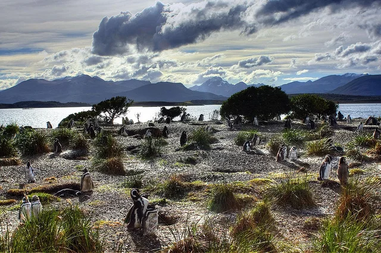
So, I've lost track of how many days that I've been here. I was originally coming for something like 87 days, so it must be near day 80 or so. As the title of the post says, I'm down to only 8 days left.
I spent the weekend down in Ushuaia, Argentina, the southernmost city in the world. I had a great time, and was almost sad to leave when the time came. Staying in a hostel was a great experience, and I always had people around. Compared to Buenos Aires, where I work mostly solo during the weeks,...
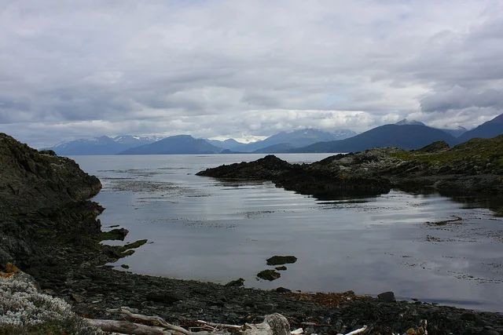
I´m currently at the Antarctica Hostel in the city of Ushuaia, Argentina, affectionately called the city at the end of the world. This is officially the southern most city in the entire world, so it´s pretty amazing to be here.
I´ll do a proper trip report when I´m back in Buenos Aires, but since I have a few hours to kill before my penguin tour later today, I thought I would do a quick update. The keyboard I´m using in the hostel is prety funky, and many of the keys are out of place compa...
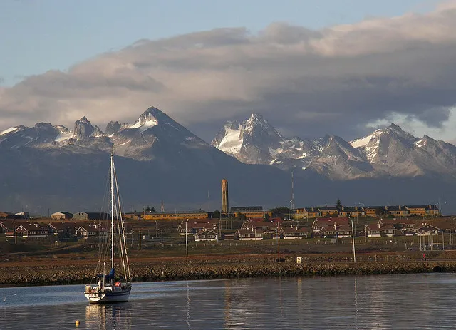
While I technically am leaving for Ushuaia in two days, for all intents and purposes (due to the early nature of my flight), I basically leave tomorrow evening.
I'm excited about Ushuaia for lots of reasons. First, the weather is a lot colder down there compared to Buenos Aires. The high on Thursday is 9C, and the low is 6C. That's almost what the weather is like back home in Vancouver as well. While a lot of people like really hot climates, I'm not really one of them. I would rather be too col...
On my original flight from Houston to Buenos Aires I commented on the fact that we hit some turbulence near the equator. It was probably about 2am for me and I was a bit groggy from ativan, so I didn't really take too much notice. But I thought at the time that it may be related to crossing from the nothern hemisphere down to the southern hemisphere.
Sure enough, there's a region of unstable air around the equator called the Intertropical Convergence Zone which often causes turbulence for fligh...
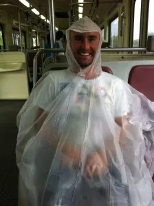
Yesterday some friends and I decided to make the journey over to Tigre, which is a little town on the Delta about an hour outside of Buenos Aires. On a normal day it may have been a lot of fun, but the weather turned sour on us and pretty much ruined the trip.
No matter though. We rolled with the punches and found humour in crappy situations.
The Journey
The train to Tigre leaves from the Retiro train station. I had thought we would be able to use the subte (subway) to get part way there, but wo...
Next weekend I'm off to visit the southern most city in the entire world, Ushuaia, Argentina. From there, many people hop on a cruise ship and head down to Antarctica. It's an expensive trip to Antarctica, starting at around $5,000 a person, but spending a day or two visiting one of the most remote parts of the world is apparently well worth the price.
I will not be visiting Antarctica, but I will be visiting the Antarctica Hostel, located close to the Beagle Channel and in the shadow of the tai...
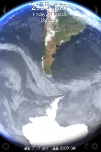
Yes sports fans, it's time for another update. Today is day 65 in Buenos Aires. About an hour ago I had my last hair-cut in the city, and going forward there are a bunch of "lasts" about to happen. In fact, it seems like most of the expats I've met in the city are already gone or on their way out. A guy named Emerick from Montreal left two weeks ago, and another guy from New York is leaving this weekend. I suspect many people came to experience a summer in Buenos Aires, and now that summer is tr...
As many people know, I'll be heading to Europe right after my trip to New York City. I officially arrive in Ireland on April 6th, and will be spending the next few weeks around the United Kingdom.
Europe is expensive, there's no doubt about it. Most hotels are around $150 a night for anything decent, and many hostels get bad reviews for what they charge. Since I've been living pretty cheaply in Argentina, I'm going to live it up a bit in April.
Ireland was definitely on the schedule, as was Lon...
I'm hungry. Not in general, but for some of the comfort foods from back home. I've been told most people miss their friends and family when they are away from home for extended periods of time. But after a while, most people start to really crave some of the foods back home. I sure know I am. What kind of foods do I miss?
Bacon? It exists, but not it's more like fried ham.
Pizza? Simple thin crust only. Only ham and olive toppings mostly.
Breakfast food? Not really, mostly just breads and yogurt...
I met a guy from Ireland at a pub about four weeks ago here in Buenos Aires. Once we got a few beers into our system, I thought I would pick his brain about what happened is his country. In North America we all know that they got themselves into a bit of a debt crisis, but the how and the way are mostly lacking from media over here.
In short, it was their own fault. Banks were participating in predatory lending, and most people in Ireland were hungry for credit. Many of this guy's friends had th...
I've been busy making plans for April. I haven't pulled the trigger yet on most of it, but I've done a preliminary timetable and the budget works. So this is what it's looking like.
March 31 - April 5 - New York City, USA April 6 - April 10 - Shannon & Limerick, Ireland April 11 - April 15 - Edinburgh, Scotland April 15 - April 17 - Dublin, Ireland April 17 - April 21 - London outskirts, England April 21 - April 26 - Paris, France
There's a bit of bouncing around there, but I'm coordinating...
When I first started planning this trip, the thought of spending almost a full year in perpetual summer seemed like an amazing goal to shoot for. I mean, who wouldn't want sunshine and warm temperatures all the time?
Truthfully though, I would love nothing more than to have a serious cold snap down here in Buenos Aires. It's been around 28C or higher pretty much since I arrived. If that were a dry heat, it wouldn't be too bad. But it's very humid here, and it makes the heat seem that much worse...
I've been blogging about buying a new camera for quite some time now, and I'm pretty sure I have it narrowed down. Unfortunately, buying a camera at this point is a compromise for me, and I have a hard time making compromises in the technology sphere.
SLR cameras and lenses are heavy. They are hard to carry, hard to pack, and a pain to take from place to place. But if you want high-end image quality, than a SLR offers you the best of the best. I love my SLR, but my Canon 40D SLR is in need of re...
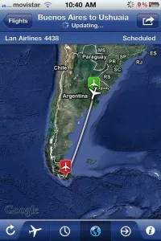
This last week was a weird week. I met up with a few friends and had some great times, but it was also the first real time I've been homesick in any capacity. There was nothing really that happened to make me feel that way, I was just sitting around and realized I was a long way from home. So I spent a day or so of being a bit melancholy.
Thankfully the feeling has past, and it's business as usual again. Weekends always get me excited, mostly because I have more opportunities to get out and expl...
I'm not sure why, but the internet in all of Buenos Aires seems to be on its knees. It's definitely worse in my apartment, but it's sporadic all over the city right now too.
The first two months I was here it was slow, but reliable for the most part. It would take me 10 hours to download something that would take me 1 or 2 back home, but you could always get online when you needed to. It's been getting worse over the last two weeks, and these last few days have been pretty brutal.
The internet ...
Today is my mom's birthday! Like almost everyone older than me, she just turned 39 today. That means she has many long, happy years of bingo playing ahead of her!
My mom was pretty sad when I moved out of Chilliwack, but she's been taking my absence like a trooper. I try and do a call with her at least once a week, and we catch up on all the excitement back in cow town. I hope she has a great day today, and that people at work treat her to lunch or something awesome like that.
Happy Birthday Mo...
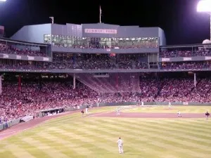
I've always been fascinated with baseball. Back when I was a kid, my dad and step-mom took me to a few Mariners games in Seattle. While prices have changed, back then you could get VIP tickets for around $30. While it's not as popular in Canada, I do appreciate the game, the stadiums, the hot dogs, the peanuts and the entire atmosphere that goes around with watching a live baseball game.
James Earl Jones' speech in Field Of Dreams regarding baseball is a great one. Throughout all the turmoil in ...
Well, it's officially midnight in Buenos Aires, which means I can start wishing happy birthdays. Today of course is Dale's 31st birthday. Dale is not only a trusted friend, but the second (and arguably less good-looking) half of BraveNewCode, the company that Dale and I both own.
The last few years have had ups and downs, seeing me move from Vancouver, to Chilliwack, and now to Argentina. Amongst all the turmoil, there have been only a few constants, and Dale has been one of them. For the most ...
I went for a walk at lunch to clear my mind, and ended up strolling through a little park in Palermo. There was an empty bench that was cast in a bit of shade from a large tree, so I sat down with the intention of relaxing for a few minutes while listening to music.
About 45 degrees to my right was another guy on a bench casually reading a book, and 45 degrees to my left was another guy who was taking a little nap on his bench. Just a couple of dudes enjoying a nice sunshiny day in the park.
A ...
It shouldn't be a huge surprise based on the previous few entries, but I'm starting to get a tad restless in Buenos Aires.
Unlike Canada where the WiFi is generally reliable, the WiFi here is pretty spotty, which makes it hard to get out of the house to work. The last week and a half it's been absolutely terrible, with constant drop outs and complete blackouts for an hour or more from time to time.
Back home, I would often go to Starbucks to break the day up a bit, but the WiFi at the nearest S...
One of the strange side effects of being tossed through a plate glass window was that I pretty much had a complete medical evaluation of my entire body done over the course of a year. The stack of papers I collected from the hospital due to the initial injury and subsequent surgeries was about 100 pages worth of material. I also have two or three CDs with the raw digital data from both CT scans and my MRI. It's an amazing amount of material, and an incredible amount of insight into my own body....
Observe this photo from the KatKam:
If you look closely, you can see some kind of flying object in the sky. I can only assume it's an airplane, but it looks like it's flying from the top of the photo down to the bottom.
As a kid, I used to think every time I saw an object like that that it was the Space Shuttle. As an adult, I now know that the Space Shuttle doesn't fly every day like I thought it did as a kid. But I guess that has to be a normal commercial plane and the fact it looks like it's...
Last weekend I flew up to Puerto Iguazu and checked out Iguazu Falls. It was a great trip, and it was nice to get out of town for a few days. Puerto Iguazu reminded me a lot of Tofino actually, without the surfing. It was a quant little village with only a few main streets. The people were friendly, the food was good, and there were less bars on the windows and graffiti than here in Palermo Soho in Buenos Aires.
The WiFi in my apartment (which is shared between about six suites) has been really...
Last weekend I flew up to Puerto Iguazu to check out some of the most impressive waterfalls in the world, Iguazu Falls. Here is a breakdown of my visit to Iguazu Falls in South America.
Flight From Buenos Aires To Puerto Iguazu
I booked a flight on LAN airlines from Buenos Aires to Puerto Iguazu. Round trip airfare on the weekend is roughly $380 CAD, but thanks to some points on my credit card I managed to get about $300 off, ultimately costing me only $80 or so.
Unlike most international flight...
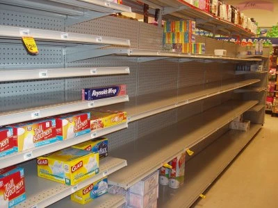
When the protests started in Egypt, they were over something relatively benign: the increased costs of basic food items. That led to full on revolts, and the eventual toppling of the government in Egypt.
We now see what's happening in Libya, and it's possible that these are just the first few pebbles in what will undoubtedly be a much larger avalanche. People who are hungry are motivated for change.
Make no mistake, the increased costs of commodities and food is in large part the result of the U...
I started an Iguazu Falls posting last night, but it's undoubtedly going to be a large post and will take me a while longer to put together. Look for it tomorrow or Wednesday night sometime.
According to my little iPhone widget, I only have 37 days left in Buenos Aires. Obviously that's not much time, and it means that I've already been here almost 50 days or so. I'm heading to Ushuaia for St. Patrick's Day, which means I only have four other weekends to do some more exploring within Buenos Aire...
I'm currently at around 35,000 feet, somewhere between Buenos Aires and Puerto Iguazu. No, I'm not blogging from the plane, but rather I've set this post to publish while I'm up in the air.
I wasn't going to do another post before leaving for Iguazu Falls, but then I remembered my weekly Friday updates and wanted to get another in. So I thought that for this week's Friday update it would be fun to create a few lists about what I enjoy here so far, and what I miss the most.
Things I Love About B...
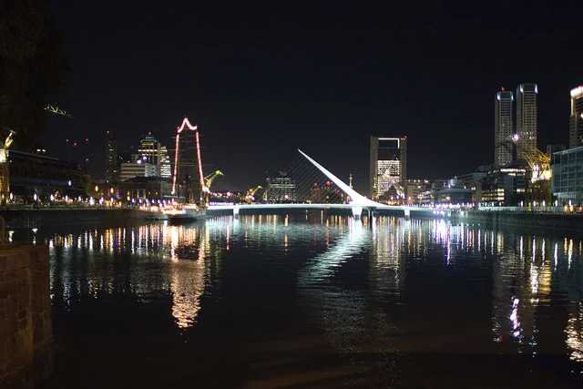
Last night a few of us went down to check out a little party on a boat docked in Puerto Madero. Puerto Madero is the area on the east of Buenos Aires that is one of the newest, trendiest (also, more expensive) areas within Buenos Aires, and is home to a lot of skyscrapers, one of which houses Microsoft's offices here.
It was the first time I hazarded to take my DSLR out in public, and I'm really glad I did. Truthfully, it's been great getting back into photography, since I essentially took a few...
Sexy, that's what I'll say.
When I first looked into purchasing a few silver coins, I did it under the assumption that the coins would mostly be worth value due to their intrinsic silver content (called the 'melt value'). While some collectors coins fetch a hefty premium on top of their melt value, most bullion and high purity coins are mainly traded for their metal content.
That said, I read a post recommending the purchase of the Canadian Mint's "Silver Wolf" coin a while ago as opposed to the...
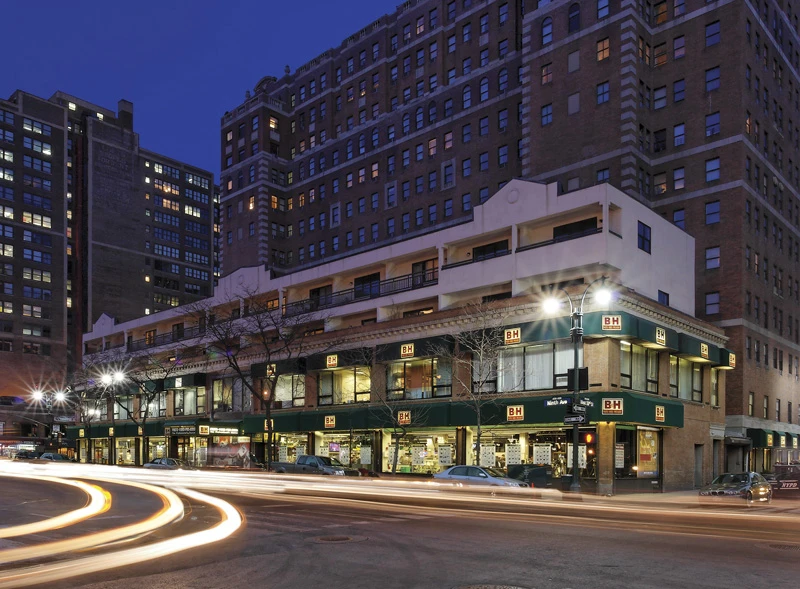
I've been blogging a fair deal about my upcoming trip to New York City, and how one of the highlights for me is undoubtedly going to be visiting B&H Photo in New York City. B&H is an extremely well known photography store, and it's been on my list of places to visit for many years now.
Thanks to the power of the Internet, Hershel Waldner, Supervisor of the Online Marketing Department for B&H Photo, contacted me and asked if I'd like a private tour of the facilities while I'm there. ...
This is my last blog entry until next week most likely. Friday afternoon I'm packing up some of my stuff and getting on a plane to Puerto Iguazu, a small city right on the edge of some of the nicest waterfalls in the world, Iguazu Falls. This will be my first real trip from Buenos Aires, and the first time getting on a plane again since I arrived.
To say that I'm looking forward to this trip would be an understatement. Ever since I saw my first photo of the falls a few months ago, I've been anx...
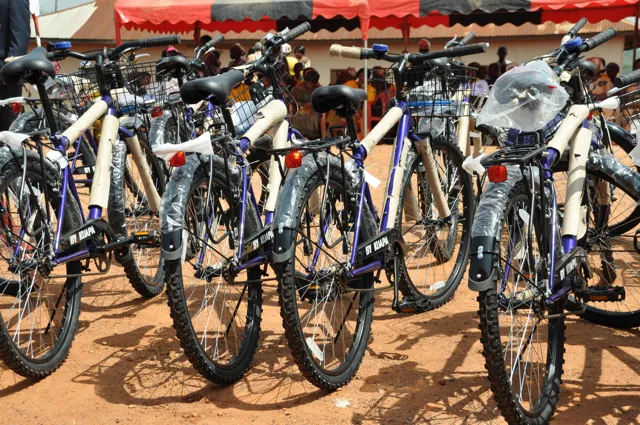
Traveling the world for leisure is obviously a great adventure. While I get to enjoy the weekends and the evenings, I'm also working as I travel, so most of my days are spent building plugins for WordPress and helping keep things afloat. But I do get to venture out from time to time free of computers and cell phones and enjoy some of what the world has to offer, for example, this weekend's trip to the famous Iguazu Falls.
But other types of travel are for more nobler causes. As an example, a go...
I originally wasn't going to bring my SLR along at all on my trip, mainly because it would take up a pile of room. As the departure day loomed in front of me though, I just couldn't bring myself to travel the world with only my point and shoot.
As a compromise I decided to bring along the Canon EF 28mm f/1.8 lens, which I bought right before coming. On a 1.6x crop factor it acts more like a 44mm lens, which is close to a standard lens but slightly wider. I was hoping that would be a useful field...
Right before I left on my big adventure, almost everyone in my family was talking about going on a New Year's diet. Years ago I was having trouble dropping a bit of weight, so I tried the Atkin's diet when it was all the rage, and lost so much weight that it wasn't even funny. Since that time I've studied up on why low carb diets work and have to come the one conclusion that refined carbohydrates are pretty evil. So while I'm not as lean and fit as I once was, I try to stay away from anything th...
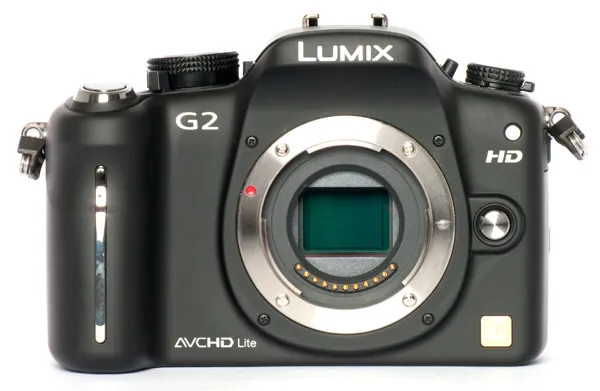
Take a look at the photo on the right. If you notice, there are four boxes for Canon Digital Elphs, two boxes for Digital SLRs, and one box for a HD camcorder. That photo was taken almost three years ago now, and since then I believe I've had at least one more Canon point and shoot camera.
The thing is though, I'm all Canon'ed out. At least in the Point and Shoot realm, I have found myself continually disappointed with the performance of the cameras. Every Digital Elph I've owned has suffered f...
So last night I was really craving a kick ass steak dinner. I generally eat pretty healthy during the week, which means I look forward to indulging a bit more on the weekends. I did a quick Google search and ended up deciding that I wanted to visit La Cabrera, which is a very well known steak house and also the #3 restaurant (out of about 770 or so) in all of Buenos Aires on TripAdvisor. So I was definitely looking forward to it.
Jump ahead about 15 minutes and I found myself outside of the res...
Matt Trentacoste was talking about this bad boy on Twitter the other day, and I've been passively thinking about it ever since. In short Fujifilm is releasing a compact camera that has some high-end image specifications. I suspect you're going to see more and more of this going forward. While SLRs are great, they are a big and bulky and hard to carry around. If you could get comparable image quality out of a smaller camera, it would be a game changer for the professional camera market.
So befor...
One of the biggest questions people always ask me about Buenos Aires is whether or not it is a safe city. Buenos Aires has an international reputation (at least lately) of being riddled with petty crime. Prior to coming here, I did quite a few scans on the internet and there is no shortage of sites talking about people's personal experiences with crime in Buenos Aires. In fact, many of the locals talk about it like getting something stolen is almost a rite of passage in this city.
Upon landing ...
To be perfectly honest, one of the items from my childhood that I miss the most is going for a bike ride. Back when I was about 17 I picked up my first real mountain bike, a Specialized Rockhopper. Compared to most modern mountain bikes, it was a bit lacking - it didn't have shocks, or fancy XTR equipment, but it was fun to ride and was a fairly modern metal matrix design (at the time). I remember a lot of good memories of hanging out with Jeff and Brennen and heading into the trees for an afte...
As soon as I leave Buenos Aires, I'll be heading over to Ireland to visit my friend Andy for a few days. I'm not sure how long I'll be in Limerick, but afterwards I'll probably make my way to Dublin to explore that city a bit more. Another friend of mine from Vancouver, Tanya, is probably going to meet me in Dublin for a bit of exploring, so that'll be fun.
Sometime in June I'd like to make my way to Serbia to visit my friend Milan.
But outside of those two bookends, I really don't have any pla...
It's been a long time since I did a technology post, but I've recently had security on my mind and thought I would give a quick primer for SSL. For those of you who don't know, SSL stands for secure socket layer, and is the technology on the internet that makes all eCommerce and web security possible. And here's how it works.
First, you need to understand the two different types of encryption.
Symmetric Encryption
Symmetric encryption is any encryption that involves one key and can be decoded i...
As the title says, I've been in Buenos Aires now for 37 days. After next week, I will have officially crossed the half-way mark here, at which point I'll be winding down and starting to get in my last sight seeing before leaving. I still have almost seven weeks here though, which is still quite a bit of time.
This last week was mostly uneventful, other than a very late night out at the pub last Saturday night. Unlike North America, most people don't even go out on the weekends here until midnigh...
I gotta say, I like precious metals. Maybe it's because I've seen Pirates of the Caribbean one too many times, or maybe I was a gypsy in another life. But there's something strangely appealing about the shine and lustre of a piece of gold or silver.
Most guys don't have many opportunities to own any metals. I used to have a gold plated watch, but unless you're wearing a suit or at a formal event, a gold watch just looks out of place most of the time. My current watch is made of titanium, which ...
Here's a quick video update from Buenos Aires on roughly day 34.
And just to clarify - when I was talking about free kisses being awesome, I was referring to the ladies!...
One of the hard parts of traveling around is deciding what to bring with you and what to leave behind. That's relevant before your adventures, and it's also relevant while you're traveling.
Despite Buenos Aires having a relatively high petty crime rate, I spent my first week and a half here walking around with my wallet in my back pocket and basically every piece of ID and financial card in there as well. It wasn't until I lost my bank card a few days later that I started to really think about t...
 Prior to leaving on my first travel adventure, there were a few key people that helped inspire me to leave my North American life behind. One such person is a good Vancouver friend of mine, Robert Scales.
Here's Robert's latest BIO:
PADI Master Scuba Diver Trainer with a passion for management, teaching, underwater photography, and digital media. I’m currently working in Bali, I am the General Manager and a Master Scuba Diver Trainer at Dive Concepts.
I’m a former digital media executive. A...
Prior to leaving on my first travel adventure, there were a few key people that helped inspire me to leave my North American life behind. One such person is a good Vancouver friend of mine, Robert Scales.
Here's Robert's latest BIO:
PADI Master Scuba Diver Trainer with a passion for management, teaching, underwater photography, and digital media. I’m currently working in Bali, I am the General Manager and a Master Scuba Diver Trainer at Dive Concepts.
I’m a former digital media executive. A...
 Alaska Airlines recent announced that they were starting service from Bellingham International Airport to Honolulu, Hawaii. Last week I managed to find a cheap $400 return flight on that same route, so I decided to book it and finally get around to seeing Hawaii.
I've looked at going to Hawaii before, but the costs have always been rather high when compared to Mexico. Hawaii is an American state, so not only does it have American prices which are in line with the rest of North America, but it al...
Alaska Airlines recent announced that they were starting service from Bellingham International Airport to Honolulu, Hawaii. Last week I managed to find a cheap $400 return flight on that same route, so I decided to book it and finally get around to seeing Hawaii.
I've looked at going to Hawaii before, but the costs have always been rather high when compared to Mexico. Hawaii is an American state, so not only does it have American prices which are in line with the rest of North America, but it al...
 I have to admit, this weather has been getting me down. Other than a few days of sun on Vancouver Island last week, I haven't really seen much in the way of warmth or sunshine since returning from South America. When I looked at the forecast this morning and saw 7 days of rain in the long term forecast, I decided to do something about it.
I spent about 15 minutes bouncing around Expedia and Travelocity, and eventually honed in on a flight to Hawaii for a little over $400 out of Bellingham. Give...
I have to admit, this weather has been getting me down. Other than a few days of sun on Vancouver Island last week, I haven't really seen much in the way of warmth or sunshine since returning from South America. When I looked at the forecast this morning and saw 7 days of rain in the long term forecast, I decided to do something about it.
I spent about 15 minutes bouncing around Expedia and Travelocity, and eventually honed in on a flight to Hawaii for a little over $400 out of Bellingham. Give...
 Inside my suitcase upstairs is a huge manilla envelope that has the majority of receipts in it for my trip to South America. Since some of them represent expenses that I can write-off on the business side, it was important to keep them for Revenue Canada in the odd event of an audit down the road.
Unfortunately for me though, it meant that I had to collect all my receipts while traveling around the world. It's one thing when you have an apartment in Canada and everything can be sorted into file ...
Inside my suitcase upstairs is a huge manilla envelope that has the majority of receipts in it for my trip to South America. Since some of them represent expenses that I can write-off on the business side, it was important to keep them for Revenue Canada in the odd event of an audit down the road.
Unfortunately for me though, it meant that I had to collect all my receipts while traveling around the world. It's one thing when you have an apartment in Canada and everything can be sorted into file ...
 One of the main reasons I came back from my last trip was to take a bit of a breather in BC for a few months, and also to enjoy a bit of time camping in the outdoors. I've managed to do both since arriving back at the end of April, and so it's time to start thinking about moving on again.
I quite liked escaping some of Vancouver's dreary rainy/cold season last year in Argentina, and I thought I would head to the southern hemisphere again this year. With that in mind, I've been thinking about New...
One of the main reasons I came back from my last trip was to take a bit of a breather in BC for a few months, and also to enjoy a bit of time camping in the outdoors. I've managed to do both since arriving back at the end of April, and so it's time to start thinking about moving on again.
I quite liked escaping some of Vancouver's dreary rainy/cold season last year in Argentina, and I thought I would head to the southern hemisphere again this year. With that in mind, I've been thinking about New...
 I'm sure most of us have some story about a friend of ours who got dinged several hundred dollars or more in roaming charges while out of the country. My friend Chris has a $6,000 bill in Australia, something that unfortunately still happens quite often due to amazingly high roaming rates in some countries. I've been fortunate in that I haven't been exposed to any high fees, and have in fact often spent less in other countries than back in Canada.
I spent some time speaking to Gillian Shaw on t...
I'm sure most of us have some story about a friend of ours who got dinged several hundred dollars or more in roaming charges while out of the country. My friend Chris has a $6,000 bill in Australia, something that unfortunately still happens quite often due to amazingly high roaming rates in some countries. I've been fortunate in that I haven't been exposed to any high fees, and have in fact often spent less in other countries than back in Canada.
I spent some time speaking to Gillian Shaw on t...
 About two months ago I was packing up my items in Buenos Aires, getting ready to fly to New York City and then to Europe. I've been out in Port Coquitlam now for almost a month and am pretty much back into the swing of my normal routine here.
I've been thinking quite a bit about the summer, and of course what my plans are after that. Everything is still up in the air, but here's how I think things will shape out.
I've been planning for quite some time to take most of July and August off. I have ...
About two months ago I was packing up my items in Buenos Aires, getting ready to fly to New York City and then to Europe. I've been out in Port Coquitlam now for almost a month and am pretty much back into the swing of my normal routine here.
I've been thinking quite a bit about the summer, and of course what my plans are after that. Everything is still up in the air, but here's how I think things will shape out.
I've been planning for quite some time to take most of July and August off. I have ...
 I remember taking a summer off from UBC one year and heading back to Chilliwack. At the time gas was sitting at around 39 cents per litre. It's hard to imagine that it's only been around ten years since then and gas is now hovering at around 140 cents a litre in the Vancouver area. To put that into context, the $60 I spend filling up my car would have cost around $16 back then.
In fact, now that I'm back in the Vancouver area, it's not lost on me just how expensive it is to own and operate a ca...
I remember taking a summer off from UBC one year and heading back to Chilliwack. At the time gas was sitting at around 39 cents per litre. It's hard to imagine that it's only been around ten years since then and gas is now hovering at around 140 cents a litre in the Vancouver area. To put that into context, the $60 I spend filling up my car would have cost around $16 back then.
In fact, now that I'm back in the Vancouver area, it's not lost on me just how expensive it is to own and operate a ca...
 I moved into my summer home yesterday with John and have slowly started getting settled. Most of my bedding is stuck in the back of my storage locker, but considering that I only have a duvet and some sheets stored I decided to simply buy a new bed set. So yesterday I went out and bought a bed in a bag from the new Walmart out in Chilliwack.
Since then I've dropped about $250 on both groceries and a few new kitchen toys, including a slow cooker. I had a slow cooker a long time ago but never used...
I moved into my summer home yesterday with John and have slowly started getting settled. Most of my bedding is stuck in the back of my storage locker, but considering that I only have a duvet and some sheets stored I decided to simply buy a new bed set. So yesterday I went out and bought a bed in a bag from the new Walmart out in Chilliwack.
Since then I've dropped about $250 on both groceries and a few new kitchen toys, including a slow cooker. I had a slow cooker a long time ago but never used...
 I've been going pretty much non-stop since last Wednesday. It's hard for me to believe that less than a week ago I was sitting in the airport in Buenos Aires getting ready to leave. Since then I've flown for 15 hours, been molested in Houston airport, and spent five days bouncing around New York City with my friend.
Leaving Buenos Aires
Before leaving Canada I managed to pick up a prescription of Ativan to help with airplane anxiety. I actually have a mild-phobia of hurtling through the atmosphe...
I've been going pretty much non-stop since last Wednesday. It's hard for me to believe that less than a week ago I was sitting in the airport in Buenos Aires getting ready to leave. Since then I've flown for 15 hours, been molested in Houston airport, and spent five days bouncing around New York City with my friend.
Leaving Buenos Aires
Before leaving Canada I managed to pick up a prescription of Ativan to help with airplane anxiety. I actually have a mild-phobia of hurtling through the atmosphe...
 As of yesterday, I am no longer the owner of a SLR camera. I purchased my first SLR back in 2004, so I've been a SLR user for almost 7 years. And while I love the quality of photos you can take with a SLR camera, dragging tons of equipment and lenses around gets a bit tiring. That's even more true when you start picking up some of the nicer, heavier lenses, many of which I owned previously.
I sold all my L-series glass about 6 months ago, partially because they weren't being used and also becaus...
As of yesterday, I am no longer the owner of a SLR camera. I purchased my first SLR back in 2004, so I've been a SLR user for almost 7 years. And while I love the quality of photos you can take with a SLR camera, dragging tons of equipment and lenses around gets a bit tiring. That's even more true when you start picking up some of the nicer, heavier lenses, many of which I owned previously.
I sold all my L-series glass about 6 months ago, partially because they weren't being used and also becaus...
 Six months ago I was sitting back in my apartment in Chilliwack trying to figure out where the first destination on my big adventure would take me. I immediately thought of the Caribbean, since it was an area I had been to many times and I was familiar with. Since the goal of my trip was to also work while exploring the world, that meant wherever I ended up would have to have decent access to the internet. That took Cuba off the list, as well as most small towns. I was actually homing in on the ...
Six months ago I was sitting back in my apartment in Chilliwack trying to figure out where the first destination on my big adventure would take me. I immediately thought of the Caribbean, since it was an area I had been to many times and I was familiar with. Since the goal of my trip was to also work while exploring the world, that meant wherever I ended up would have to have decent access to the internet. That took Cuba off the list, as well as most small towns. I was actually homing in on the ...
 Next weekend I'm off to visit the southern most city in the entire world, Ushuaia, Argentina. From there, many people hop on a cruise ship and head down to Antarctica. It's an expensive trip to Antarctica, starting at around $5,000 a person, but spending a day or two visiting one of the most remote parts of the world is apparently well worth the price.
I will not be visiting Antarctica, but I will be visiting the Antarctica Hostel, located close to the Beagle Channel and in the shadow of the tai...
Next weekend I'm off to visit the southern most city in the entire world, Ushuaia, Argentina. From there, many people hop on a cruise ship and head down to Antarctica. It's an expensive trip to Antarctica, starting at around $5,000 a person, but spending a day or two visiting one of the most remote parts of the world is apparently well worth the price.
I will not be visiting Antarctica, but I will be visiting the Antarctica Hostel, located close to the Beagle Channel and in the shadow of the tai...
 I'm hungry. Not in general, but for some of the comfort foods from back home. I've been told most people miss their friends and family when they are away from home for extended periods of time. But after a while, most people start to really crave some of the foods back home. I sure know I am. What kind of foods do I miss?
Bacon? It exists, but not it's more like fried ham.
Pizza? Simple thin crust only. Only ham and olive toppings mostly.
Breakfast food? Not really, mostly just breads and yogurt...
I'm hungry. Not in general, but for some of the comfort foods from back home. I've been told most people miss their friends and family when they are away from home for extended periods of time. But after a while, most people start to really crave some of the foods back home. I sure know I am. What kind of foods do I miss?
Bacon? It exists, but not it's more like fried ham.
Pizza? Simple thin crust only. Only ham and olive toppings mostly.
Breakfast food? Not really, mostly just breads and yogurt...
 I've been blogging about buying a new camera for quite some time now, and I'm pretty sure I have it narrowed down. Unfortunately, buying a camera at this point is a compromise for me, and I have a hard time making compromises in the technology sphere.
SLR cameras and lenses are heavy. They are hard to carry, hard to pack, and a pain to take from place to place. But if you want high-end image quality, than a SLR offers you the best of the best. I love my SLR, but my Canon 40D SLR is in need of re...
I've been blogging about buying a new camera for quite some time now, and I'm pretty sure I have it narrowed down. Unfortunately, buying a camera at this point is a compromise for me, and I have a hard time making compromises in the technology sphere.
SLR cameras and lenses are heavy. They are hard to carry, hard to pack, and a pain to take from place to place. But if you want high-end image quality, than a SLR offers you the best of the best. I love my SLR, but my Canon 40D SLR is in need of re...
 I'm not sure why, but the internet in all of Buenos Aires seems to be on its knees. It's definitely worse in my apartment, but it's sporadic all over the city right now too.
The first two months I was here it was slow, but reliable for the most part. It would take me 10 hours to download something that would take me 1 or 2 back home, but you could always get online when you needed to. It's been getting worse over the last two weeks, and these last few days have been pretty brutal.
The internet ...
I'm not sure why, but the internet in all of Buenos Aires seems to be on its knees. It's definitely worse in my apartment, but it's sporadic all over the city right now too.
The first two months I was here it was slow, but reliable for the most part. It would take me 10 hours to download something that would take me 1 or 2 back home, but you could always get online when you needed to. It's been getting worse over the last two weeks, and these last few days have been pretty brutal.
The internet ...
 Today is my mom's birthday! Like almost everyone older than me, she just turned 39 today. That means she has many long, happy years of bingo playing ahead of her!
My mom was pretty sad when I moved out of Chilliwack, but she's been taking my absence like a trooper. I try and do a call with her at least once a week, and we catch up on all the excitement back in cow town. I hope she has a great day today, and that people at work treat her to lunch or something awesome like that.
Happy Birthday Mo...
Today is my mom's birthday! Like almost everyone older than me, she just turned 39 today. That means she has many long, happy years of bingo playing ahead of her!
My mom was pretty sad when I moved out of Chilliwack, but she's been taking my absence like a trooper. I try and do a call with her at least once a week, and we catch up on all the excitement back in cow town. I hope she has a great day today, and that people at work treat her to lunch or something awesome like that.
Happy Birthday Mo...
 One of the strange side effects of being tossed through a plate glass window was that I pretty much had a complete medical evaluation of my entire body done over the course of a year. The stack of papers I collected from the hospital due to the initial injury and subsequent surgeries was about 100 pages worth of material. I also have two or three CDs with the raw digital data from both CT scans and my MRI. It's an amazing amount of material, and an incredible amount of insight into my own body....
One of the strange side effects of being tossed through a plate glass window was that I pretty much had a complete medical evaluation of my entire body done over the course of a year. The stack of papers I collected from the hospital due to the initial injury and subsequent surgeries was about 100 pages worth of material. I also have two or three CDs with the raw digital data from both CT scans and my MRI. It's an amazing amount of material, and an incredible amount of insight into my own body....
 Last weekend I flew up to Puerto Iguazu and checked out Iguazu Falls. It was a great trip, and it was nice to get out of town for a few days. Puerto Iguazu reminded me a lot of Tofino actually, without the surfing. It was a quant little village with only a few main streets. The people were friendly, the food was good, and there were less bars on the windows and graffiti than here in Palermo Soho in Buenos Aires.
The WiFi in my apartment (which is shared between about six suites) has been really...
Last weekend I flew up to Puerto Iguazu and checked out Iguazu Falls. It was a great trip, and it was nice to get out of town for a few days. Puerto Iguazu reminded me a lot of Tofino actually, without the surfing. It was a quant little village with only a few main streets. The people were friendly, the food was good, and there were less bars on the windows and graffiti than here in Palermo Soho in Buenos Aires.
The WiFi in my apartment (which is shared between about six suites) has been really...
 Last weekend I flew up to Puerto Iguazu to check out some of the most impressive waterfalls in the world, Iguazu Falls. Here is a breakdown of my visit to Iguazu Falls in South America.
Flight From Buenos Aires To Puerto Iguazu
I booked a flight on LAN airlines from Buenos Aires to Puerto Iguazu. Round trip airfare on the weekend is roughly $380 CAD, but thanks to some points on my credit card I managed to get about $300 off, ultimately costing me only $80 or so.
Unlike most international flight...
Last weekend I flew up to Puerto Iguazu to check out some of the most impressive waterfalls in the world, Iguazu Falls. Here is a breakdown of my visit to Iguazu Falls in South America.
Flight From Buenos Aires To Puerto Iguazu
I booked a flight on LAN airlines from Buenos Aires to Puerto Iguazu. Round trip airfare on the weekend is roughly $380 CAD, but thanks to some points on my credit card I managed to get about $300 off, ultimately costing me only $80 or so.
Unlike most international flight...
 I'm currently at around 35,000 feet, somewhere between Buenos Aires and Puerto Iguazu. No, I'm not blogging from the plane, but rather I've set this post to publish while I'm up in the air.
I wasn't going to do another post before leaving for Iguazu Falls, but then I remembered my weekly Friday updates and wanted to get another in. So I thought that for this week's Friday update it would be fun to create a few lists about what I enjoy here so far, and what I miss the most.
Things I Love About B...
I'm currently at around 35,000 feet, somewhere between Buenos Aires and Puerto Iguazu. No, I'm not blogging from the plane, but rather I've set this post to publish while I'm up in the air.
I wasn't going to do another post before leaving for Iguazu Falls, but then I remembered my weekly Friday updates and wanted to get another in. So I thought that for this week's Friday update it would be fun to create a few lists about what I enjoy here so far, and what I miss the most.
Things I Love About B...
 I originally wasn't going to bring my SLR along at all on my trip, mainly because it would take up a pile of room. As the departure day loomed in front of me though, I just couldn't bring myself to travel the world with only my point and shoot.
As a compromise I decided to bring along the Canon EF 28mm f/1.8 lens, which I bought right before coming. On a 1.6x crop factor it acts more like a 44mm lens, which is close to a standard lens but slightly wider. I was hoping that would be a useful field...
I originally wasn't going to bring my SLR along at all on my trip, mainly because it would take up a pile of room. As the departure day loomed in front of me though, I just couldn't bring myself to travel the world with only my point and shoot.
As a compromise I decided to bring along the Canon EF 28mm f/1.8 lens, which I bought right before coming. On a 1.6x crop factor it acts more like a 44mm lens, which is close to a standard lens but slightly wider. I was hoping that would be a useful field...
 It's been a long time since I did a technology post, but I've recently had security on my mind and thought I would give a quick primer for SSL. For those of you who don't know, SSL stands for secure socket layer, and is the technology on the internet that makes all eCommerce and web security possible. And here's how it works.
First, you need to understand the two different types of encryption.
Symmetric Encryption
Symmetric encryption is any encryption that involves one key and can be decoded i...
It's been a long time since I did a technology post, but I've recently had security on my mind and thought I would give a quick primer for SSL. For those of you who don't know, SSL stands for secure socket layer, and is the technology on the internet that makes all eCommerce and web security possible. And here's how it works.
First, you need to understand the two different types of encryption.
Symmetric Encryption
Symmetric encryption is any encryption that involves one key and can be decoded i...
 I shot a quick video showing the Buenos Aires Obelisk the other day. Check it out.
And here's a photo I snapped from the distance.
...
I shot a quick video showing the Buenos Aires Obelisk the other day. Check it out.
And here's a photo I snapped from the distance.
...